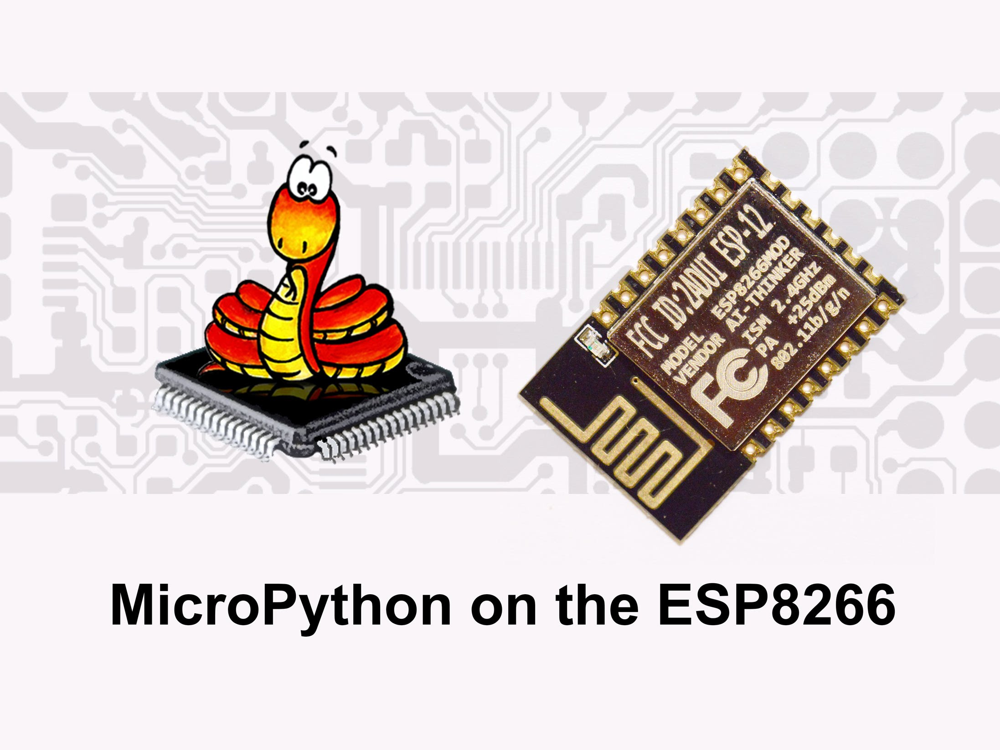

Archived note, written in 2016. Tools and versions have moved on since.
About
MicroPython on ESP8266
This tutorial features topics on How to get started on MicroPython. We will use the same NodeMCU Dev Board from AMICA for the tutorial since it helps in easy deployment of code. You may check the previous tutorial.
Being a new project,it is recommended to build the micropython firmware from the latest source.You may check the kickstarter campaign to know more on how the ESP8266 port came to life.If you need an old firmware you may go the official download page.

Image Source : https://i.ytimg.com/vi/mq0nRgQIxj0/maxresdefault.jpg
Setting Up SDK
We will need OpenSource ESP SDK tool chain to build the binaries.You can find more about the SDK from here.
- To ensure that the depedencies are installed.
sudo apt-get install make unrar-free autoconf automake libtool gcc g++ gperf flex bison texinfo gawk ncurses-dev libexpat-dev python-dev python python-serial sed git unzip bash help2man wget bzip2 libtool-bin
- Clone the source
git clone --recursive https://github.com/pfalcon/esp-open-sdk.git
- Move to cloned directory.
cd esp-open-sdk
- Build the SDK.
make
The process will take several minutes. It took me 30 minutes so please wait for the process to complete
- Add path for the bourne shell to find the program
export PATH=/home/akshaim/Documents/ESP8266/esp-open-sdk/xtensa-lx106-elf/bin:$PATH
The program is located in xtensa-lx106-elf/bin hence please make sure that you give location as in your system
Building and Uploading Firmware
- Clone the Micropython repository
git clone --recursive https://github.com/micropython/micropython.git
Now you will have micropython folder created inside esp-open-sdk folder.
- Change Directory
cd micropython
- To add external dependencies
git submodule update --init
- Build the cross compiler
make -C mpy-cross
- Change directory
cd esp8266
- Make
make axtls
- Make the bin
make
The output will be a file named firmware-combined.bin located in esp8266/build
- Change Directory
cd build
- Upload the code
esptool.py --port=/dev/ttyUSB0 --baud 460800 write_flash -fm=dio -fs=32m 0x00000 firmware-combined.bin
For more details on using ESPtool please refer my previous tutorial
We will now try to build/crosscompile the binaries from source.You can find more about micropython source from here. Before proceeding ensure that your working directory is esp-open-sdk.